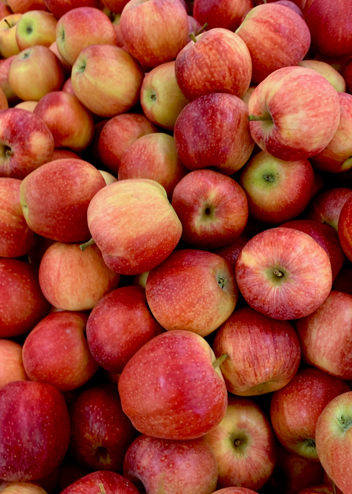

FAQ'S
When and where is the Apple Harvest Festival located?
The festival takes place in Downtown Ithaca, New York, starting on Friday, September 29th, from 12-6pm, and continuing on Saturday-Sunday, September 30th - October 1st, starting at 10 am.
Is there an admission fee for the festival?
No, the Apple Harvest Festival is free and open to everyone, including college students.
Are there parking facilities available nearby?
Yes, there are various parking options available in and around Downtown Ithaca. Please check local parking garages, lots, and street parking availability.
Can I bring outside food and drinks to the festival?
While outside food and drinks are allowed, we encourage you to support our local vendors and food trucks offering a wide variety of delicious treats and refreshments.
Are there activities for college students at the festival?
Yes, the Apple Harvest Festival offers a vibrant atmosphere with live music, entertainment, and plenty of opportunities to socialize with friends while enjoying the festivities.
How can I volunteer at the Apple Harvest Festival?
We welcome college students to volunteer and be a part of making the festival a success! Please visit our website for more information on how to get involved and contribute to this exciting community event.

Welcome to the Annual Apple Harvest Festival in Downtown Ithaca, New York!
About the festival
Join us for a delightful celebration of all things apple! The Apple Harvest Festival promises an abundance of farm-fresh apples and produce, mouthwatering apple and seasonal baked goods, and a cornucopia of culinary delights from food trucks offering tasty bites. Immerse yourself in the vibrant atmosphere of our craft fair, featuring talented artisans from across the region showcasing their unique creations. Live music and entertainment will keep the festivities lively, while the shops in and around Downtown will tempt you with a variety of apple-inspired products for sale.
festival dates
- Friday, September 29th, 12-6pm
- Saturday-Sunday, September 30th - October 1st, 10am onwards
Join Us!
Mark your calendars for a weekend filled with apple-themed fun and flavors! Whether you're a local or visiting from afar, the Apple Harvest Festival promises an unforgettable experience for all ages.